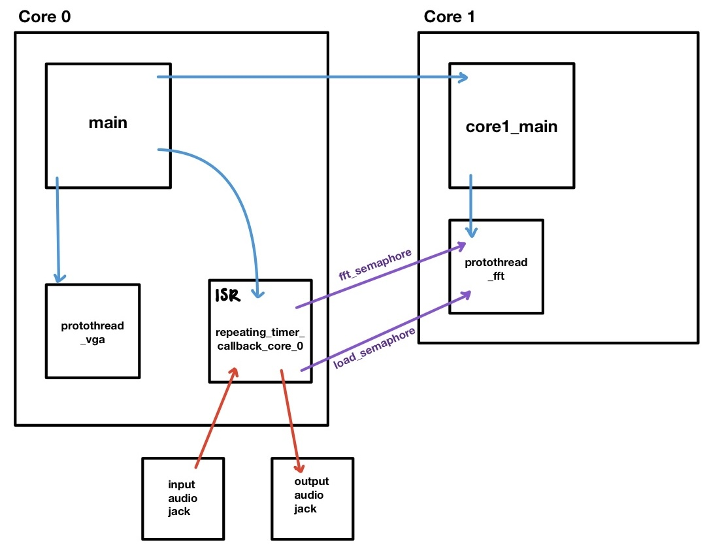
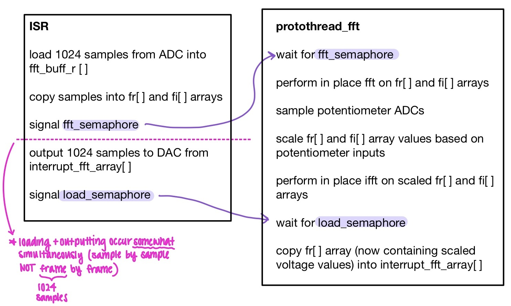
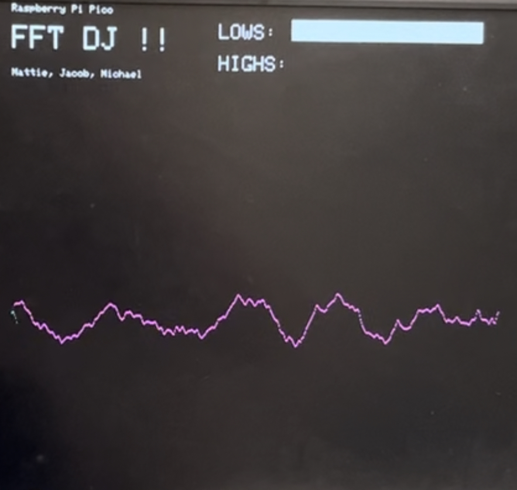
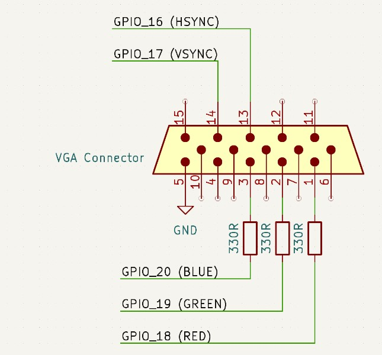
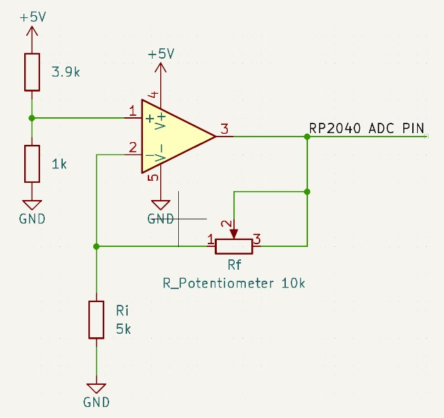

The DJ 2040 allows users to tune audio input in the frequency domain and visualize the sound on a display!
This project was inspired by recording studios and the ability to manipulate audio inputs. We process the inputted audio through an ADC channel, apply an FFT to it, apply a filter to the FFT, and then compute the inverse FFT of the filtered frequency-domain signal. The results of the inverse FFT are written to the DAC and outputted through a speaker. This is all done in real-time. To filter the signal, two potentiometers are used. The first potentiometer tunes the lower frequencies, and the second potentiometer tunes the higher frequencies. This gives the user the control to alter the sound of a song in a way that mimics a DJ board. Finally, the tuned audio in the time domain along with the levels of the potentiometers are outputted to the VGA display, providing a visual user interface.
Because any music or audio is composed of many different pure sine wave frequencies added together, audio can be represented as the sum of many, if not infinitely many, sine waves. Thus, in constructing sound in this way, the frequency spectrum can be viewed as being comprised of many frequencies at different amplitudes. The fact that sound can be decomposed into separate frequencies is advantageous when attempting to modify the sound according to different frequency ranges.
Our design utilizes FFTs and IFFTs to convert data from the time domain to the frequency domain (FFT) and back (IFFT). In the time domain, the main manipulations that can be performed on sound are volume, which corresponds to the amplitude of the voltages being outputted, and playback speed, which corresponds to how quickly we output samples. However, to change the volume of sound within a specific frequency range (much like the bass, mid, and high knobs on a common DJ board or music synthesizer), the use of frequency filters or amplifiers is required. This computation could be done using filters and convolutions in the time domain, but it is much easier to achieve this same behavior by running FFTs on the sound frames and performing element-wise multiplication in the frequency domain, where these multiplications are chosen to scale the magnitude of the sound at the given frequency.
In terms of implementation, our design uses both cores, two protothreads, an interrupt service routine triggered by a repeating timer, and two semaphores to synchronize the ISR and the FFT computation thread. The figure below shows the interactions between all of these software components.
We decided to put the protothread_fft as the sole thread on Core 1 because it is responsible for computing both an FFT and an inverse FFT for each sound frame (1024 samples). All of these computations must occur during the time that it takes the ISR to output the previous frame. The ISR runs every 80 microseconds, so this time can be calculated as follows:
1024 samples * 80us/sample = 81920us = 81.920ms of maximum computation time allowed per frame
This is plenty of time for the FFT thread to finish its calculations. However, because of the timing dependencies between the ISR and the FFT thread, we did not want protothread_fft to share its core with any other thread. We also separated the ISR and protothread_fft into different cores so that they could run fully parallel to each other, allowing protothread_fft the full 81.920ms of computation time.
In the same vein, we decided to run the protothread_vga on Core 0 with the ISR because it is less computationally expensive, less critical to the functionality of our design, and less time-sensitive than protothread_fft.
The audio processing techniques used can be structured in three different stages: audio input reading, frequency domain manipulation, and audio output. Analog voltage inputs into the RP2040 and outputs to the speaker are both done inside of the ISR running at 12.5 kHz, allowing for strict synchronization with audio sampling and output.
The reading of the audio output is done with ADC channel 0. With the DC-biased voltage that comes out of the audio connector and into the ADC channel, the program can directly read the ADC channel and extract the analog voltages that correspond to the sound being streamed in. The numbers that directly come from the channel will not be the actual values of voltage that is seen at the ADC channel input but instead represent the voltage level with respect to the ADC’s resolution and the reference voltage that the ADC uses. However, because all these numbers are in the same proportion to the real analog voltage values, it is unnecessary to convert the values to their analog voltages when computing any of the audio processing algorithms. As the audio is streamed in, 1024 samples are taken from the ADC before running an FFT on that frame. Once there is data for the sound in the frequency domain, the frequency manipulation by virtue of the potentiometer knobs can take place.
Computations for audio control using the potentiometer knobs are done right before the IFFT is run on the audio frame. The inputs at the ADC channels that correspond to the potentiometer knobs see a voltage between 1 and 3 (which is explained further in the Hardware Design section), and thus in order to use these as scalars to the audio, they must be converted from the ADC units to their actual voltage values. Once the voltage values are calculated, the scalar to be used is that voltage minus one, allowing the audio control to range from zero to double the inputted volume. Right before running the IFFT, a loop goes through each value of the frequency spectrum and multiplies them by the scalar calculated from the current value of one of the ADC channels. One of the knobs controls the magnitude for frequencies below 400 Hz and the other controls frequencies above 400 Hz. After looping through the frequency spectrum and manipulating the magnitude for the target frequencies, the IFFT is run on the edited spectrum. The conversion of this frame back into the time domain gives us the analog voltages that should be outputted to the speaker at the same sampling rate it was received.
Outputting the sound to the external DAC requires configurations specific to the DAC, and also a bit more audio manipulation in order to make the sound a good volume for us to hear. In every instance of the ISR running, one value from the manipulated sound array is first multiplied by 2 (in order to increase the volume of the sound), cast to an integer from a fix15 value, and masked according to the configuration requirements for the DAC used. Once these operations are performed on the analog value, this number is written to the DAC using SPI. One of the DAC’s voltage outputs is directly connected to both ends of the output audio connector, which is then connected to an audio cable for a speaker to output the received sound.
The primary functionality of our project is the audio processing component. In our software, this consists of the ISR and the FFT protothread (protothread_fft). These two functions communicate with each other through semaphores, which ensures that each step of the process is synchronized properly while allowing the ISR and protothread to run in parallel. The basic functions of both components as well as their communication are described in the pseudocode in Figure 2 below.
At a high level, the ISR is responsible for the input and output of audio data from the RP2040, and protothread_fft is responsible for all of the audio processing that occurs in software. As shown in Figure 2, the ISR collects inputs, the protothread_fft performs the audio processing computations described in section 3.1 above, and the ISR takes the resulting data and outputs it to the DAC.
It is important to note that the inputting and outputting within the ISR occur sample by sample. That is, for each run of the ISR, one sample is loaded into fft_buff_r and one sample is outputted to the DAC from interrupt_fft_array. However, the other processes such as copying the samples and signaling the semaphores only occur once every frame (1024 samples). This ensures that the audio samples are being collected and outputted at the same rate (12.5kHz).
In addition to the ISR and the protothread_fft, we use different arrays for each stage of audio processing. This allows us to perform each stage in parallel with each other which in turn helps ensure that we are able to do all of the computation while still inputting and outputting at a consistent 12.5kHz. That is, we are able to both take in audio samples, output audio samples and perform computations on audio samples concurrently. We used the memcpy C function to reliably copy data between arrays without pointer dependencies.
| Array | Purpose / Stage |
|---|---|
| fft_buff_r / fft_buff_i | Audio input- the input audio is loaded into the fft_buff_r array and the fft_buff_i array is initialized to 0 since the voltages in the time domain do not have any imaginary components. |
| fr / fi | Audio processing- all of the FFT, frequency domain manipulation, and IFFT computations are done with these arrays. |
| interrupt_fft_array | Audio output- after the audio processing stage is finished, the fr array is copied into this array which is then read by the ISR and outputted to the DAC. |
The VGA display was modeled after Professor Adams’ FFT to VGA display project, with the main difference being that we displayed the voltage amplitude of our sound signal over time instead of the frequency spectrum. The display can be seen in Figure 3 above. We also included bars for each potentiometer input to show the level that each potentiometer was set to and was scaling its frequency range. To display the voltage vs. time plot, we used the interrupt_fft_array scaled by a factor of 8 for visibility. Using the interrupt_fft_array means that we are displaying the same signal that is being output to the speakers, enhancing the user experience by providing both a visual and auditory experience of our altered signal.
Not all 1024 samples would fit onto the width of the display, so we only display every other sample, which unfortunately decreases our resolution and causes higher frequencies to appear less clearly (making the high frequencies look like noise rather than a clear part of the signal). However, as we turn down the higher frequencies, we can see them being filtered out on the display as shown in Figure 4. Conversely, we can visually see the lower frequencies being filtered out when we turn down its corresponding potentiometer shown in Figure 5.
Since the VGA display uses the interrupt_fft_array, timing must be considered to ensure the data being outputted to the screen is accurate. The interrupt_fft_array is the same array that the ISR outputs to the DAC. This means that the protothread_fft will only update the array once every 81.92ms, allowing plenty of time for the protothread_vga to finish drawing the full frame. Although there is currently no guarantee that the protothread_fft will wait for the protothread_vga if it is not done drawing, we decided not to insert a semaphore as we would rather the VGA screen to be slightly wrong for one frame than the full system to pause which would affect the audio output.
In order to receive audio data, sound from a computer is plugged into an audio connector breakout, allowing us to actually receive and use the analog voltages that correspond to the sound waves to be outputted. The voltage from one end of the audio connector (corresponding to either left or right in stereo audio) was used as the input to one of the ADC channels on the RP2040, allowing us to read in the analog voltages of the sound as it is played from a device. Becuase the ADC channel on the RP2040 requires a voltage between 0V and 3.3V, a voltage divider is used to hold the ADC pin at a mid-rail bias, and a series capacitor is placed in between the ADC conncection and the audio jack output in order to capture the correct analog voltage behavior centered around a 1.65V bias. This voltage divider and series capacitor also acts as a high pass filter with a break frequency at around 318 Hz. The filter does not significantly cut out the low frequencies until about 80 Hz (discovered by simply listening). Though we can still hear in a frequency range below 80 Hz, it is ultimately a very quiet range for us to hear, and concluded that it is not important to keep the frequencies below 318 Hz at unity gain.
The design for the audio input network was inspired by the "Audio Spatializer" project by Bianca Tseng, Crystal Shi, and Rosie Wildermuth in the Fall 2022 section of ECE 4760. Their implementation included a low pass filter at around 5 kHz to eliminate aliasing effects, but we chose not to implement this filter after finding that the there were no significnat audible artifacts when removing that low pass filter.
The final sound output after audio processing is accomplished using a 12-bit digital to analog converter that communicates with the RP2040 using SPI. The DAC has the ability to produce audio for two separate audio channels, but because we are only using single-ended audio, only one of these channels is used. An additional audio jack connects to the DAC output in order to capture the analog voltages and transfer them into an audio cable connected to a speaker. Both ends of the audio connector are attached to the same DAC output channel in order to ensure mono audio.
Unlike the input signal, the output to the audio connector does not need to be at a mid-rail bias because the software implementation places the DC bias of the signal in its middle range already. Placing the voltage levels in the software is advantageous because a mid-rail bias in hardware would inherently require filtering due to the need for an RC network.
In an attempt to eliminate noise in the sound signal, a low pass filter was implemented around 12.5 kHz (which exactly matches the sampling frequency of the ADC). However, this low pass filter did not seem to eliminate any noise, but instead only contributed to volume attenuation. As a result, this low pass filter at the output was not used in the final design.
The hardware for the VGA display was the same as our display for previous labs, with the VSYNC and HSYNC pins controlled by a digital signal from two of the microcontroller’s GPIO pins. The HSYNC pin indicates to the screen when to point to a new row of pixels, and the VSYNC pin indicates to the screen when to begin a new frame. HSYNC works by holding high for 640 clock cycles (the number of pixels in each row) and executing a blanking region sequence before moving to the next row. Because one row has 640 pixels, the voltage levels of the RED, GREEN, and BLUE pins are read for 640 clock cycles with each cycle drawing the color for a given pixel in the row. Once 480 rows are drawn, VSYNC will execute its ending sequence (analogous to the blanking region sequence that HSNYC has but with different timings), which then indicates to the screen to move to a new frame and will point to the first pixel in the first row. The connections to the HSYNC and VSYNC pins on the cable can be connected directly to the microcontroller because it supports the 3.3V digital input from the GPIO pins. However, the color pins on the VGA connector require an analog voltage of up to 0.7V. However, these connections are controlled with the GPIO pins that can only output 3.3V or 0V. Because there is a 70Ω resistor to ground, a 330Ω resistor can be added between the GPIO pins and the VGA connector in order to create a voltage divider that produces a suitable voltage at the input to the VGA cable. With these connections using digital pins from the microcontroller, there are eight options for color based on the eight different combinations that can be made for the states of each of the color pins.
The control knobs are implemented using linear rotary potentiometers. Because we wanted the rotating of the potentiometers to have a linear relationship with the control scalars for the sound output, the peripheral circuitry invovled vor connecting the potentiometers is done in order to have a linear relationship between voltage at the ADC input channel and position of the pontentiometer's position.
Figure 9 displays the schematic used for setting up the potentiometer control knobs. The non-inverting amplifier circuit creates a gain of A = 1 + Rf / Ri. Thus, with a linear rotary potentiometer as the amplifier's feedback resistor (where the resistance is linear with respect to potentiometer position), the output voltage of the amplifier will also be linear with respect to potentiometer position. The voltage seen by the ADC for each control knob will then be use to process the audio that the RP2040 receives, which will be discussed further in the Software Design section. Additionally, with an input voltage of 1V to the amplifier, the gain is a measure of the voltage seen by the ADC channel: (1 + Rf / Ri) Volts.
The maximum gain for this amplifier was chosen such that the op-amp used and the RP2040's ADC channel could both handle the dynamic range that the amplilfier will provide. Firstly, the LM358 op-amp used for this circuit is not a rail-to-rail amplifier, and thus can only provide a voltage up to 1.42V lower than its positive supply voltage, and 100mV greater than its negative supply voltage. With a negative supply voltage at ground, this means that the output voltage should not ever go below 100mV. Additionally, the requirements of the RP2040 ADC channel indicate that the voltage should not exceed 3.3V, since the voltage reference for the ADC channels will cause the channel to saturate at 3.3V, and any readings above that voltage will not be able to be read. As a result, the maximum output voltage of the amplifier was held to be 3V, which gives a dynamic range of 1 to 3 volts that the amplifier output can range between. This 3V maximum is suitable for the op-amp specifciations because it is well below the 1.42V below the supply voltage (using a 5V supply voltage from the RP2040). In order to acheive this dynamic range, we consider that the maximum resistance of the potentiometer is 10kΩ, and the minium resistance is 0Ω. Using the voltage equation, we can already see that when the resistance of the potentiometer is at its minimum, the output votlage will be 1V. As a result, the resistance Ri must be set such that the maximum resistance of the potentiometer matches the maximum voltage we want to be outputted, which is 3V. We can find this resistance by rearranging the voltage equation:
1 + Rf / Ri = 3
(1 + Rf) / 3 = Ri
Overall, we successfully created a system that could dynamically alter audio data in the frequency domain according to user input and output it in real-time. We also successfully created a user interface through the combination of the VGA display and the potentiometer control knobs. The first video linked is of us walking through our system and discussing some of the challenges that we encountered along the way. The second video is a bare-bones demonstration of the system.
As demonstrated in the videos, our final system is able to filter out the high frequencies and the low frequencies using the potentiometer knobs. These effects can be both heard through the actual audio as well as seen on the VGA display.
One important aspect of this project was the sampling frequency of the inputted sound, and thus the output frequency of the processed audio. Ultimately, we opted to use a sampling and output frequency of 12.5 kHz. Even though this sampling frequency is lower than the threshold of human hearing, and effectively eliminates any sounds that are 12.5 kHz or higher, this frequency range makes up only a small fraction of music composition and is not necessary to keep. This decision to sample at this low of a frequency was decided upon for multiple reasons. For one, having a lower frequency allows enough time between sampling and sound outputting to do all the computations that are required of our design. Along with this advantage, there is also headroom wherein there’s still spare time between each interrupt in case there is more computation that is desired. Another reason for having this low frequency has to do with sound artifacts upon output. These sound artifacts sound like short lapses where there’s static that is louder than the wanted noise. It is assumed that these artifacts are due to effects while running the FFTs or the IFFTs, and thus the timing between the instances of these artifacts is synchronized with the sampling frequency and the number of samples in a singular frame. As a result, increasing the sampling and output frequencies causes the unwanted sound artifacts to appear more frequently and distorts the output sound much more. So, it is preferable to sample and output at lower frequencies to prevent too much music distortion.
Our user interface is intuitive and simple to use. Because we use an audio jack as our input, the user can plug their device directly into the system and play whatever song they want. This allows for great flexibility on the user side. Additionally, the potentiometer knobs are a common hardware interface for users to adjust the levels of something in the system. They are commonly used on DJ boards as well as standard speakers making them intuitive to use. Finally, the VGA display provides a feedback mechanism for the user to be able to visually see the effects of their inputs. This is helpful for the user to understand how the potentiometers are affecting the audio as it reinforces the concept visually.
Overall, our project was successful. We were able to dynamically tune the frequencies as desired using both potentiometers, in real-time which in the end was the ultimate goal. However, we did face challenges throughout this project, including issues integrating external memory and noise. These challenges as well as possible extensions to our project are detailed in the following subsections.
The original plan for our project was to be able to record audio, store it on an SD Card, read it back, and alter the audio as it is being played. This use of external memory was necessary due to the limited flash memory available on the RP2040. Due to complications with timing using the SD card, which resulted in data loss, it had to be removed from the project altogether. Instead, we pivoted to altering audio as it is being inputted. If we had more time, we would have also tried using an external FRAM device. FRAM is Ferroelectric Random Access Memory and has faster access times than an SD card. This is desirable for our application because of the dynamic nature of our project. Since we want to alter the audio data in the frequency domain as it is being outputted, we have to fetch the next frame, perform our frequency manipulation, and perform the inverse FFT within the time it takes for the previous frame to be outputted (81.92ms when sampling at 12.5kHz). Since we were able to complete all of these steps on time without the SD card, we suspect that the data fetching step from the SD card was too slow, causing data to be outputted before we were done with all the computations. This resulted in very noisy audio. Since FRAM has faster access times, it could potentially solve this problem and allow us to implement our original design.
There is a small amount of noise that can be heard during our audio playback, which is likely due to our decision to omit the Hanning window used in the original FFT demo. The Cooley-Tukey FFT algorithm that we use assumes a periodic signal. However, our sampling frame may not capture a full period of our signal, which causes a discontinuity at the beginning and end of the frame. The FFT then treats this discontinuity as a square wave, introducing noise at all frequencies. Normally, a Hanning window is used to create a periodic envelope around the raw signal to prevent this noise from being introduced. However, after converting our signal back to the time domain, this window persisted, resulting in a low-frequency packet that could be clearly heard on the output. This could be resolved by overlapping frames by exactly half of a period and only performing the FFT on the overlapping samples for each frame. For our initial demonstration, we decided to fully omit the Hanning window because the amount of noise that was introduced was not super significant. If we had more time, we would use the Hanning window and implement the overlap method to filter it out. This would greatly improve our audio quality.
Future work for this project beyond integrating external memory and re-including the Hanning window could include adding more user inputs through additional potentiometers and external ADCs that would allow us to tune more frequency ranges such as the standard bass, middle, and high ranges. We could also include a user input that controls the playback speed, which would require us to separate the output functionality into a separate ISR that is dependent on a different timer whose period we could dynamically adjust based on the user input. External ADCs are required for these extensions because the RP2040 only has 3 ADC channels, all of which we are currently using.
There were no intellectual property considerations. We used the FFT code from the course FFT VGA demo, and drew inspiration from the Audio Spatializer project for how to best use semaphores to synchronize our code. Both of these projects are open-source and directly affiliated with the course.
The group approves this report for inclusion on the course website.
The group approves the video for inclusion on the course Youtube channel.
Jacob was responsible for the hardware and audio tuning.
Michael was responsible for interfacing with SD card.
Madeleine was responsible for VGA display and hardware.
All team members debugged and worked on report.